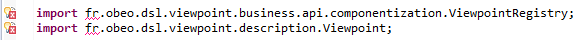
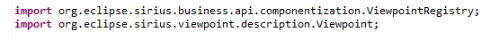

The easiest way to define your own modeling tools!
Compatibility
If you have existing modeling tools which were created with the previous version of Obeo Designer, the recommended procedure to make them compatible with the latest release is to migrate them step by step on all intermediate major releases of Obeo Designer. For example, to migrate modeling tools defined using Obeo Designer 8.1 to Obeo Designer 10.0, you should first migrate them to Obeo Designer 9.0, then then to 9.1 and finally to 10.0.
The actual migration between two successive major versions N and M involves the following steps:
- Import the modeler's sources (made with version N) in the workspace of the target Obeo Designer (version M).
- Open the modeler's VSM files (the
odesignfiles) and save them back (you will need to make some change in the file to make it saveable; anything will do). This will automatically migrate the VSM data into the format of version M. Note: once this is done, you should never try to open the migrated VSM with version N (or earlier) of the software. Doing so is unsupported and may lead to unexpected behavior. - In the
MANIFEST.MFfile(s) of your modeler, update the version range for the dependencies to Sirius plug-ins so that the minimum version corresponds to the version in Obeo Designer M. This will guarantee your modeler (whose VSM is now incompatible with earlier versions of Sirius) can not be installed in environments which would not be able to use it correctly. - If your modeler contains Java code which uses the Sirius APIs, make sure to read the release notes for the corresponding Sirius version. They contain important information on changes you may need to perform on your code to continue to work.
Some additional tasks have to be performed to migrate existing modeling tools created with Obeo Designer 6.2:
- Open and save the definition of the modeling tool (
.odesignfile) with Obeo Designer 7.0; - Update the
MANIFEST.MFfile:- remove the dependencies to Acceleo 2 (
fr.obeo.dsl.common.acceleo), - replace the dependencies to proprietary source code by corresponding open source packages (
fr.obeo.dsl.viewpoint->org.eclipse.sirius), - in the
plugin.xmlfile, replace reference tofr.obeo.dsl.viewpoint.componentizationbyorg.eclipse.sirius.componentization.
- remove the dependencies to Acceleo 2 (
- In the Java source code (ex:
Activator.java), replace all the references to proprietary source code by the corresponding open source packages: - Depending on their complexity, the Acceleo 2 expressions contained in the
.odesignfile have to be replaced by the appropriate query mechanism: - AQL (recommended starting from Obeo Designer 8.1 and Sirius 3.1);
- core interpreters (
var:,feature:andservice:); - Acceleo 3 expressions;
- OCL expressions;
- Java services.
Before:

After:
